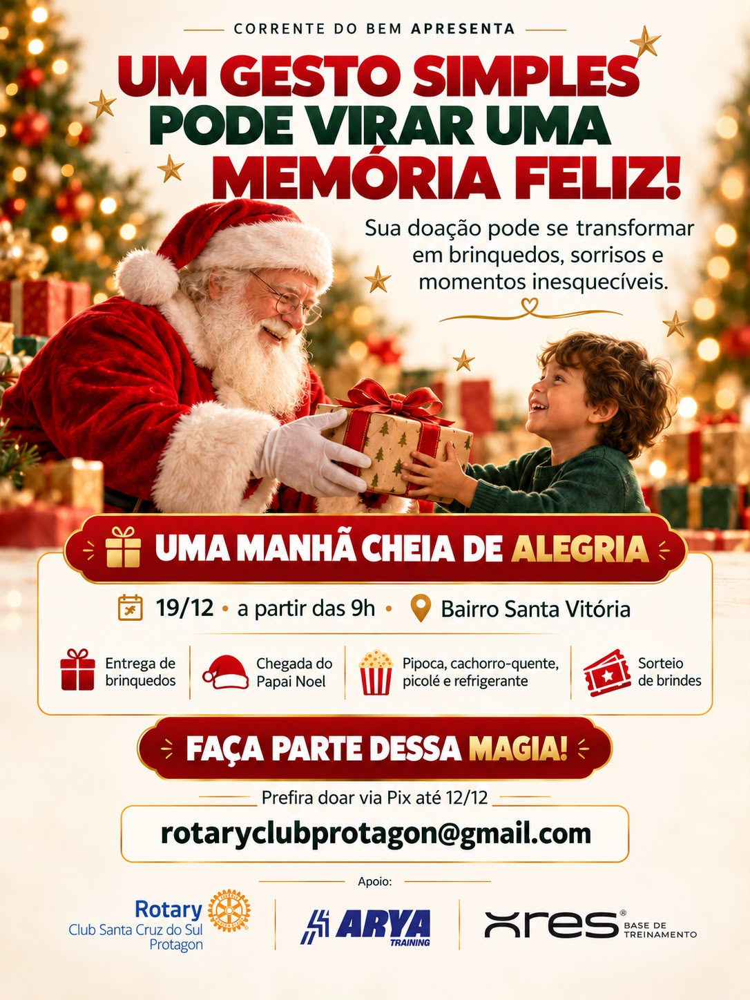

500 brinquedos
Distribuição de presentes para as crianças.
Corrente do Bem apresenta
Um gesto simples pode virar uma memória feliz.
Ajude a realizar uma manhã de Natal inesquecível para as crianças do bairro Santa Vitória.
Quero fazer parteJuntos, já arrecadamos
R$ 0,00Meta: R$ 10.000,00
Contribua até 12 de dezembro de 2026
Uma manhã cheia de alegria
Uma festa feita com carinho para celebrar e criar memórias felizes.

A partir das 9h • Bairro Santa Vitória
Santa Cruz do Sul
Distribuição de presentes para as crianças.
Cachorro-quente, pipoca, picolé e refrigerante.
Um encontro mágico para toda a comunidade.
Sorteios e mais surpresas durante a festa.
Faça parte dessa magia
Prefira contribuir via Pix até 12/12.
Toda contribuição ajuda a levar brinquedos, alimentos e alegria para esta manhã especial.